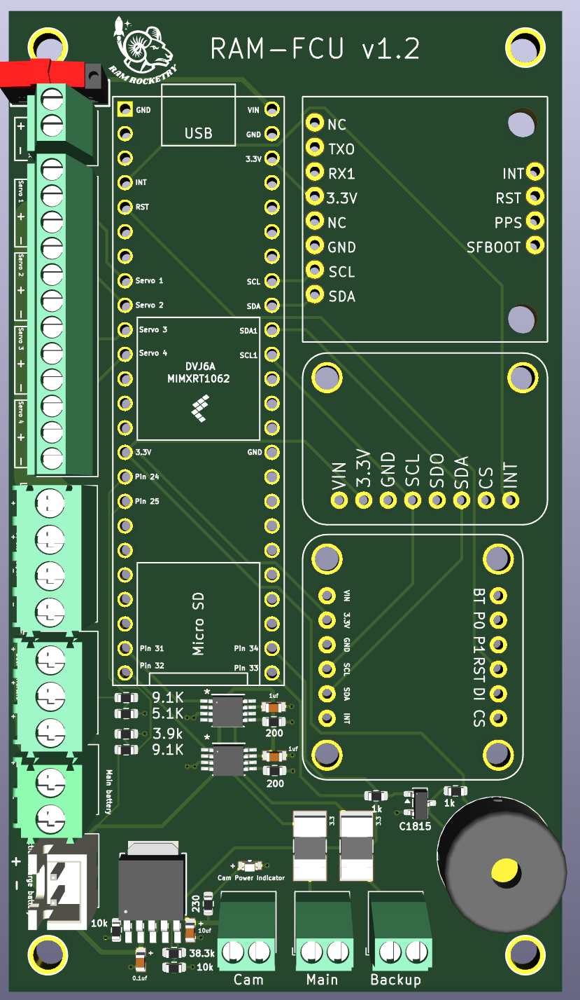
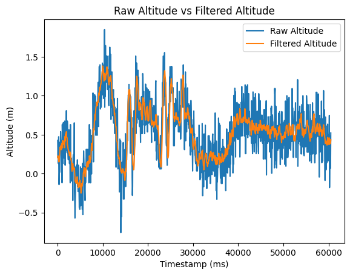
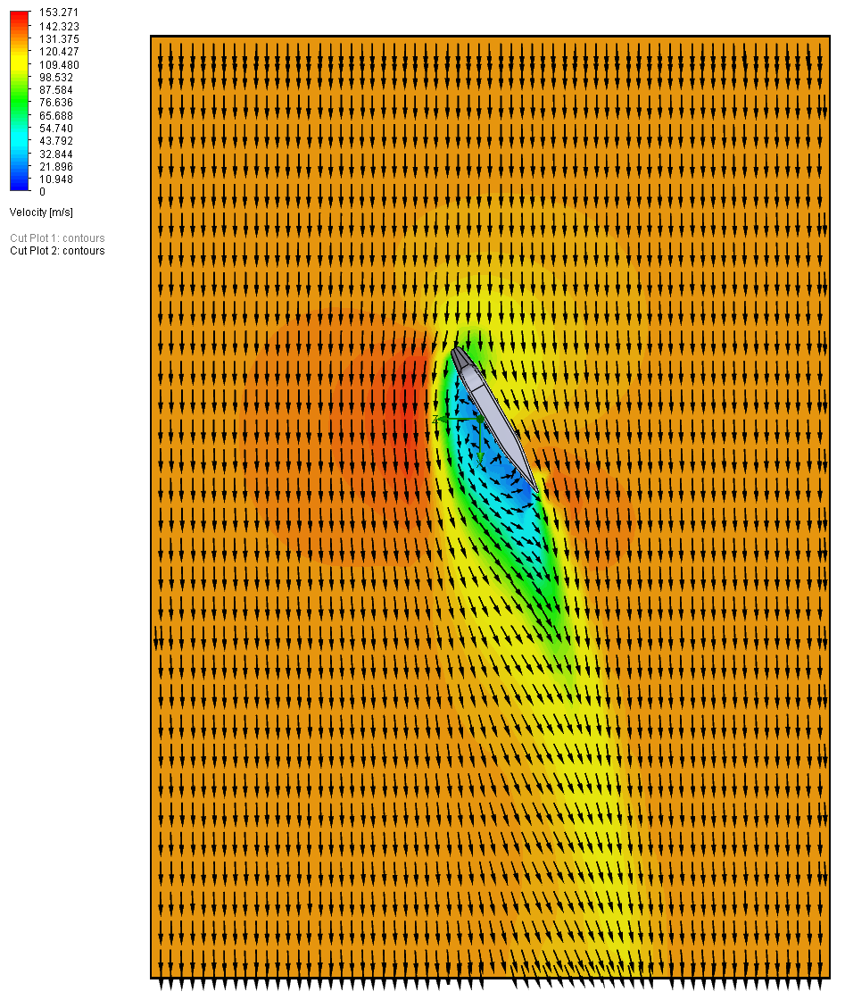

Active Fin Stabilization Rocket
A 3-inch-diameter experimental rocket built by Ram Rocketry to investigate active aerodynamic stabilization in flight. Four independently actuated upper fins were designed to generate corrective roll moments during coast, while a second set of fixed fins maintained passive stability.
My focus: Project leadership, system architecture, aerodynamic analysis, flight simulation, controls development, and integration.

- Vehicle diameter
- 3 inches
- Length / mass
- Approximately 5 ft / 2.2 kg
- Motor
- AeroTech H100W
- Predicted maximum velocity
- Roughly 130 m/s
Vehicle & electronics
The vehicle was approximately 5 ft long and 2.2 kg, powered by an AeroTech H100W motor with a predicted maximum velocity of roughly 130 m/s. The control system combined a BNO055 IMU, LPS35HW barometric sensor, onboard timing hardware, and high-torque servos driving four movable fins.

Flight dynamics & controls
I developed and worked with a six-degree-of-freedom MATLAB/Simulink model to study the vehicle’s translational and rotational response, including variable mass during motor burn, aerodynamic drag, fin forces, parachute descent, and Monte Carlo flight dispersion. The control concept kept the fins locked during powered ascent, then commanded discrete positive, negative, and neutral deflections during coast to evaluate their effect on roll.
Altitude sensing

Aerodynamic analysis
The fin geometry was also evaluated in SolidWorks Flow Simulation at velocities up to approximately 130 m/s and multiple deflection angles. Those studies were used to examine pressure distribution, wake behavior, tip vortices, and changes to the trailing-edge geometry before manufacturing.

Project integration
The project brought together mechanical design, CFD, flight dynamics, embedded electronics, and launch operations in one experimental platform. It also became an early testbed for the active-control work that Ram Rocketry later expanded into larger competition vehicles.
Ram Rocketry documentary
 ▶ Watch documentary on YouTube ↗
▶ Watch documentary on YouTube ↗